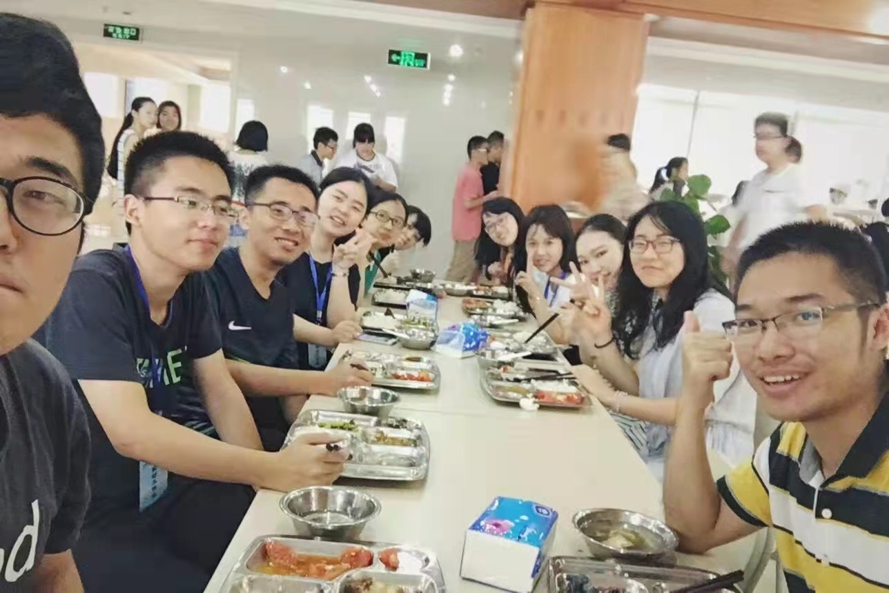

Personal Website
Biography
Current graduate student in Biostatistics at Columbia University who is expected to graduate in Summer 2023. A motivated and organized employee who can schedule multiple tasks with high efficiency with a proven history of successful work with cross-functional teams. Seeking to leverage my data-analysis skills and cross-intersectional background to effectively fill a Summer Internship role.
Here is my latest photo after visiting Princeton University. My next trip would be Iceland and Canada, hopefully! My target is to travel as many places as possible while I am still a student, and try to discover and see a different life.

These days…
* A new Columbia Mailoman School Biostatistics MS Student
* Struggling in Probability
* A huge progress in R language
* Prepare to start a brand new career pathway
* Hope to be a master of Python, R and SAS
My Past 26 year…
* In 1995, I was born as a 1 minute older sister

* In 2016, I finished all my undergraduate requirements in Zhejiang University.

* In 2017, I graduated from UIUC for my master degree.

* In 2021, I quit my job and returned to study biostatistics. 
* I have traveled to 5 different countries
* I went back to China this year and saw cute pandas

* I have helped to take care 5 cats

* I could do funny faces

And that is me!
I may not be perfect, but I am perfectly me!